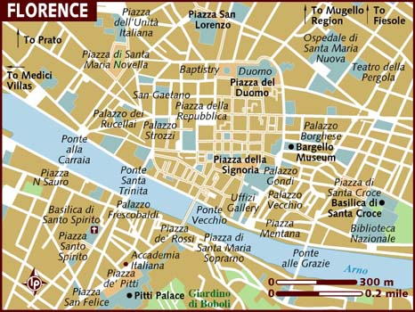
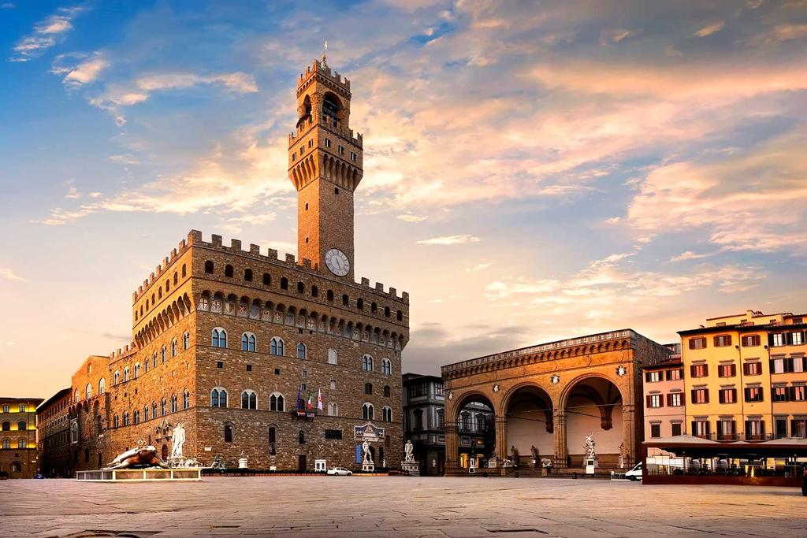

Местоположение

Флоренция е главен град на областта Тоскана и столица на провинция Флоренция. През периода 1865 – 1870 г. е и столица на Кралство Италия. Флоренция е разположена на река Арно, на площ около 102 km² с население около 356 000 души (2004 г.[3]). Счита се за люлка на западноевропейския Ренесанс. Градът е управляван дълги години от фамилията Медичи.
История
Селището е основано през 59 пр.н.е. под латинското име Florentia (чете се Флорентия и означава цветуща) от римски ветерани. По-късно се превръща в град, който през IV в. става резиденция на епископ. След това Флоренция попада под властта на Византия, на остготи, лангобарди и франки. В резултат от това населението съществено намалява до около 1000 души.
Възраждането на града започва през 10 в., а през 1115 г. Флоренция се превръща в автономна област. През 13 в. обаче се оказва въвлечена в борбата между гибелини (поддръжници на германския император) и пропапски настроените гвелфи. През 1252 г. Флоренция въвежда собствена златна монета – флорин, високо котирана в Европа. Градът бързо се разраства и през 1340 г. населението достига 80 000 души, но скоро чумата рязко намалява тази численост.
Забележителности
Флоренция е събрала толкова много от шедьоврите на изкутвото, толкова много история, родила е толкова много велики умове и до днес
предлага толкова зашеметяващи гледки, че колкото и пъти да се върнете в "столицата" на Тоскана, никога няма да можете да кажете "Аз вече познавам този град перфектно".
- Пиаца дел Дуомо – Ако не сте видяли това, значи не сте видяли Флоренция
- Катедралата Санта Мария Дел Фиоре или третата по големина катедрала в света
- Санта Репарата или разходка през вековете
- Куполът на Брунелески или 463 стъпала и 92 метра височина
- Баптистерий Сан Джовани или Кръщелнята на Флоренция
- Кулата на Джото-Кампаниле-Камбанария
- Музео дел’Опера дел Дуомо
- Санта Кроче и площада пред нея
- Пиаца дела Синьория и Палацо Векио
